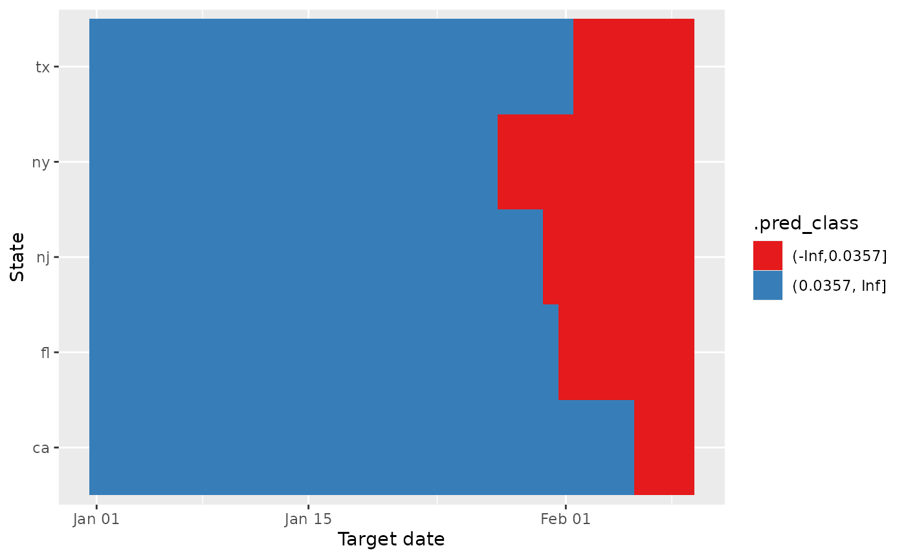

Introducing the ARX classifier
The arx_classifier() is an autoregressive classification
model for epi_df data that is used to predict a discrete
class for each case under consideration. It is a direct forecaster in
that it estimates the classes at a specific horizon or ahead value.
To get a sense of how the arx_classifier() works, let’s
consider a simple example with minimal inputs. For this, we will use the
built-in case_death_rate_subset that contains confirmed
COVID-19 cases and deaths from JHU CSSE for all states over Dec 31, 2020
to Dec 31, 2021. From this, we’ll take a subset of data for five states
over June 4, 2021 to December 31, 2021. Our objective is to predict
whether the case rates are increasing when considering the 0, 7 and 14
day case rates:
jhu <- case_death_rate_subset %>%
dplyr::filter(
time_value >= "2021-06-04",
time_value <= "2021-12-31",
geo_value %in% c("ca", "fl", "tx", "ny", "nj")
)
out <- arx_classifier(jhu,
outcome = "case_rate",
predictors = "case_rate"
)
out$predictions#> # A tibble: 5 × 4
#> geo_value .pred_class forecast_date target_date
#> <chr> <fct> <date> <date>
#> 1 ca (-Inf,0.25] 2021-12-31 2022-01-07
#> 2 fl (-Inf,0.25] 2021-12-31 2022-01-07
#> 3 nj (-Inf,0.25] 2021-12-31 2022-01-07
#> 4 ny (-Inf,0.25] 2021-12-31 2022-01-07
#> 5 tx (-Inf,0.25] 2021-12-31 2022-01-07The key takeaway from the predictions is that there are two
prediction classes: (-Inf, 0.25] and (0.25, Inf). This is because for
our goal of classification the classes must be discrete. The
discretization of the real-valued outcome is controlled by the
breaks argument, which defaults to 0.25. Such breaks will
be automatically extended to cover the entire real line. For example,
the default break of 0.25 is silently extended to breaks = c(-Inf, .25,
Inf) and, therefore, results in two classes: [-Inf, 0.25] and (0.25,
Inf). These two classes are used to discretize the outcome. The
conversion of the outcome to such classes is handled internally. So if
discrete classes already exist for the outcome in the
epi_df, then we recommend to code a classifier from scratch
using the epi_workflow framework for more control.
The trainer is a parsnip model describing
the type of estimation such that mode = "classification" is
enforced. The two typical trainers that are used are
parsnip::logistic_reg() for two classes or
parsnip::multinom_reg() for more than two classes.
workflows::extract_spec_parsnip(out$epi_workflow)#> Logistic Regression Model Specification (classification)
#>
#> Computational engine: glmFrom the parsnip model specification, we can see that the trainer
used is logistic regression, which is expected for our binary outcome.
More complicated trainers like parsnip::naive_Bayes() or
parsnip::rand_forest() may also be used (however, we will
stick to the basics in this gentle introduction to the classifier).
If you use the default trainer of logistic regression for binary
classification and you decide against using the default break of 0.25,
then you should only input one break so that there are two
classification bins to properly dichotomize the outcome. For example,
let’s set a break of 0.5 instead of relying on the default of 0.25. We
can do this by passing 0.5 to the breaks argument in
arx_class_args_list() as follows:
out_break_0.5 <- arx_classifier(jhu,
outcome = "case_rate",
predictors = "case_rate",
args_list = arx_class_args_list(
breaks = 0.5
)
)
out_break_0.5$predictions#> # A tibble: 5 × 4
#> geo_value .pred_class forecast_date target_date
#> <chr> <fct> <date> <date>
#> 1 ca (-Inf,0.5] 2021-12-31 2022-01-07
#> 2 fl (-Inf,0.5] 2021-12-31 2022-01-07
#> 3 nj (-Inf,0.5] 2021-12-31 2022-01-07
#> 4 ny (-Inf,0.5] 2021-12-31 2022-01-07
#> 5 tx (-Inf,0.5] 2021-12-31 2022-01-07Indeed, we can observe that the two .pred_class are now
(-Inf, 0.5] and (0.5, Inf). See help(arx_class_args_list)
for other available modifications.
Additional arguments that may be supplied to
arx_class_args_list() include the expected
lags and ahead arguments for an
autoregressive-type model. These have default values of 0, 7, and 14
days for the lags of the predictors and 7 days ahead of the forecast
date for predicting the outcome. There is also n_training
to indicate the upper bound for the number of training rows per key. If
you would like some practice with using this, then remove the filtering
command to obtain data within “2021-06-04” and “2021-12-31” and instead
set n_training to be the number of days between these two
dates, inclusive of the end points. The end results should be the same.
In addition to n_training, there are
forecast_date and target_date to specify the
date that the forecast is created and intended, respectively. We will
not dwell on such arguments here as they are not unique to this
classifier or absolutely essential to understanding how it operates. The
remaining arguments will be discussed organically, as they are needed to
serve our purposes. For information on any remaining arguments that are
not discussed here, please see the function documentation for a complete
list and their definitions.
Example of using the ARX classifier
Now, to demonstrate the power and utility of this built-in arx
classifier, we will loosely adapt the classification example that was
written from scratch in
vignette("preprocessing-and-models"). However, to keep
things simple and not merely a direct translation, we will only consider
two prediction categories and leave the extension to three as an
exercise for the reader.
To motivate this example, a major use of autoregressive classification models is to predict upswings or downswings like in hotspot prediction models to anticipate the direction of the outcome (see McDonald, Bien, Green, Hu, et al. (2021) for more on these). In our case, one simple question that such models can help answer is… Do we expect that the future will have increased case rates or not relative to the present?
To answer this question, we can create a predictive model for upswings and downswings of case rates rather than the raw case rates themselves. For this situation, our target is to predict whether there is an increase in case rates or not. Following McDonald, Bien, Green, Hu, et al. (2021), we look at the relative change between \(Y_{l,t}\) and \(Y_{l, t+a}\), where the former is the case rate at location \(l\) at time \(t\) and the latter is the rate for that location at time \(t+a\). Using these variables, we define a categorical response variable with two classes
\[\begin{align} Z_{l,t} = \left\{\begin{matrix} \text{up,} & \text{if } Y_{l,t}^\Delta > 0.25\\ \text{not up,} & \text{otherwise} \end{matrix}\right. \end{align}\] where \(Y_{l,t}^\Delta = (Y_{l, t} - Y_{l, t-7} / Y_{l, t-7}\). If \(Y_{l,t}^\Delta\) > 0.25, meaning that the number of new cases over the week has increased by over 25%, then \(Z_{l,t}\) is up. This is the criteria for location \(l\) to be a hotspot at time \(t\). On the other hand, if \(Y_{l,t}^\Delta\) $, then then \(Z_{l,t}\) is categorized as not up, meaning that there has not been a >25% increase in the new cases over the past week.
The logistic regression model we use to predict this binary response
can be considered to be a simplification of the multinomial regression
model presented in
vignette("preprocessing-and-models"):
\[\begin{align} \pi_{\text{up}}(x) &= Pr(Z_{l, t} = \text{up}|x) = \frac{e^{g_{\text{up}}(x)}}{1 + e^{g_{\text{up}}(x)}}, \\ \pi_{\text{not up}}(x)&= Pr(Z_{l, t} = \text{not up}|x) = 1 - Pr(Z_{l, t} = \text{up}|x) = \frac{1}{1 + e^{g_{\text{up}}(x)}} \end{align}\] where
\[ g_{\text{up}}(x) = \log\left ( \frac{\Pr(Z_{l, t} = \text{up} \vert x)}{\Pr(Z_{l, t} = \text{not up} \vert x)} \right ) = \beta_{10} + \beta_{11}Y_{l,t}^\Delta + \beta_{12}Y_{l,t-7}^\Delta + \beta_{13}Y_{l,t-14}^\Delta. \]
Now then, we will operate on the same subset of the
case_death_rate_subset that we used in our above example.
This time, we will use it to investigate whether the number of newly
reported cases over the past 7 days has increased by at least 25%
compared to the preceding week for our sample of states.
Notice that by using the arx_classifier() function we’ve
completely eliminated the need to manually categorize the response
variable and implement pre-processing steps, which was necessary in
vignette("preprocessing-and-models").
log_res <- arx_classifier(
jhu,
outcome = "case_rate",
predictors = "case_rate",
args_list = arx_class_args_list(
breaks = 0.25 / 7 # division by 7 gives weekly not daily
)
)
log_res$epi_workflow#>
#> Call: stats::glm(formula = ..y ~ ., family = stats::binomial, data = data)
#>
#> Coefficients:
#> (Intercept) lag_0_gr_7_rel_change_case_rate
#> -1.603 16.093
#> lag_7_gr_7_rel_change_case_rate lag_14_gr_7_rel_change_case_rate
#> 25.265 -1.868
#>
#> Degrees of Freedom: 914 Total (i.e. Null); 911 Residual
#> Null Deviance: 1156
#> Residual Deviance: 813.8 AIC: 821.8Comparing the pre-processing steps for this to those in the other
vignette, we can see that they are not precisely the same, but they
cover the same essentials of transforming case_rate to the
growth rate scale (step_growth_rate()), lagging the
predictors (step_epi_lag()), leading the response
(step_epi_ahead()), which are both constructed from the
growth rates, and constructing the binary classification response
variable (step_mutate()).
On this topic, it is important to understand that we are not actually
concerned about the case values themselves. Rather we are concerned
whether the quantity of cases in the future is a lot larger than that in
the present. For this reason, the outcome does not remain as cases, but
rather it is transformed by using either growth rates (as the predictors
and outcome in our example are) or lagged differences. While the latter
is closer to the requirements for the 2022-23
CDC Flusight Hospitalization Experimental Target, and it is
conceptually easy to understand because it is simply the change of the
value for the horizon, it is not the default. The default is
growth_rate. One reason for this choice is because the
growth rate is on a rate scale, not on the absolute scale, so it fosters
comparability across locations without any conscious effort (on the
other hand, when using the lag_difference one would need to
take care to operate on rates per 100k and not raw counts). We utilize
epiprocess::growth_rate() to create the outcome using some
of the additional arguments. One important argument for the growth rate
calculation is the method. Only rel_change for
relative change should be used as the method because the test data is
the only data that is accessible and the other methods require access to
the training data.
The other optional arguments for controlling the growth rate
calculation (that can be inputted as additional_gr_args)
can be found in the documentation for
epiprocess::growth_rate() and the related
vignette("growth_rate", package = "epiprocess").
Visualizing the results
To visualize the prediction classes across the states for the target date, we can plot our results as a heatmap. However, if we were to plot the results for only one target date, like our 7-day ahead predictions, then that would be a pretty sad heatmap (which would look more like a bar chart than a heatmap)… So instead of doing that, let’s get predictions for several aheads and plot a heatmap across the target dates. To get the predictions across several ahead values, we will use the map function in the same way that we did in other vignettes:
multi_log_res <- map(1:40, ~ arx_classifier(
jhu,
outcome = "case_rate",
predictors = "case_rate",
args_list = arx_class_args_list(
breaks = 0.25 / 7, # division by 7 gives weekly not daily
ahead = .x
)
)$predictions) %>% list_rbind()We can plot a the heatmap of the results over the aheads to see if there’s anything novel or interesting to take away:
ggplot(multi_log_res, aes(target_date, geo_value, fill = .pred_class)) +
geom_tile() +
ylab("State") +
xlab("Target date") +
scale_fill_brewer(palette = "Set1")
While there is a bit of variability near to the end, we can clearly see that there are upswings for all states starting from the beginning of January 2022, which we can recall was when there was a massive spike in cases for many states. So our results seem to align well with what actually happened at the beginning of January 2022.
A brief reflection
The most noticeable benefit of using the
arx_classifier() function is the simplification and
reduction of the manual implementation of the classifier from about 30
down to 3 lines. However, as we noted before, the trade-off for
simplicity is control over the precise pre-processing, post-processing,
and additional features embedded in the coding of a classifier. So the
good thing is that epipredict provides both - a built-in
arx_classifer() or the means to implement your own
classifier from scratch by using the epi_workflow
framework. And which you choose will depend on the circumstances. Our
advice is to start with using the built-in classifier for ostensibly
simple projects and begin to implement your own when the modelling
project takes a complicated turn. To get some practice on coding up a
classifier by hand, consider translating this binary classification
model example to an epi_workflow, akin to that in
vignette("preprocessing-and-models").